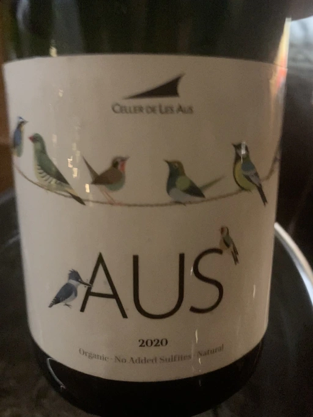

- Type
- White Sparkling, Brut nature
- Producer
- Alta Alella
- Vintage
- 2020
- Location
- Spain, Vino de Mesa
- Grapes
- Xarel-lo
- Alcohol
- 11.5
- Sugar
- NA
- Price
- 630 UAH
- Cellar
- N/A
Ratings
2021-12-15 - 4.50
Simple and not demanding Pet-Nat. Apple, yeast and soap. Weak mousse. Bad value. Quite typical.